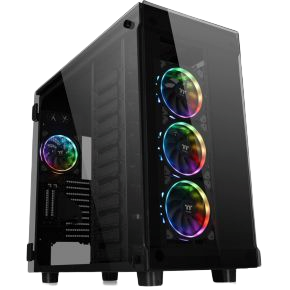

Thermaltake View 91 Tempered Glass RGB Edition Thermaltake voegt de nieuwe Thermaltake View 91 gehard glas RGB Edition Super Tower-chassis toe aan de TT Premium-reeks. Het is een 16,8-cm kleuren RGB-doordringende XL-ATX-toren met drie 5 mm dikke panelen van gehard glas (voor en aan beide zijden) en 4 voorgeïnstalleerde Riing Plus 14 RGB-ventilatoren (drie aan de voorkant en één aan de achterkant). Wordt geleverd met een USB-type-C-aansluiting op het bovenpaneel plus twee functies voor vloeistofkoeling om buitengewone LCS-flexibiliteit te bieden.